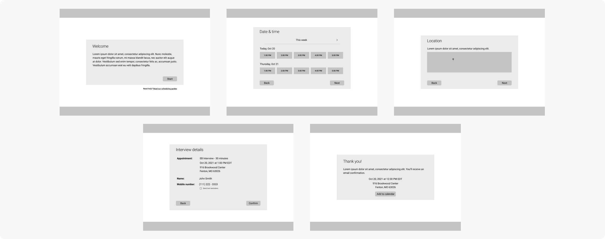
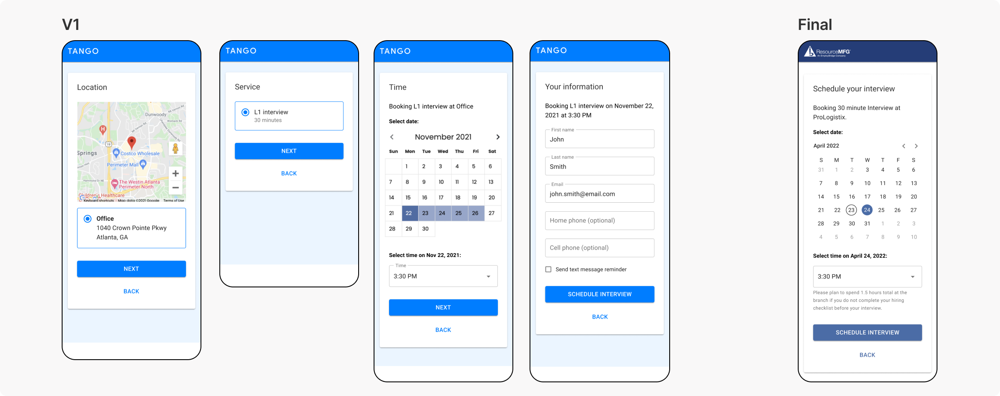
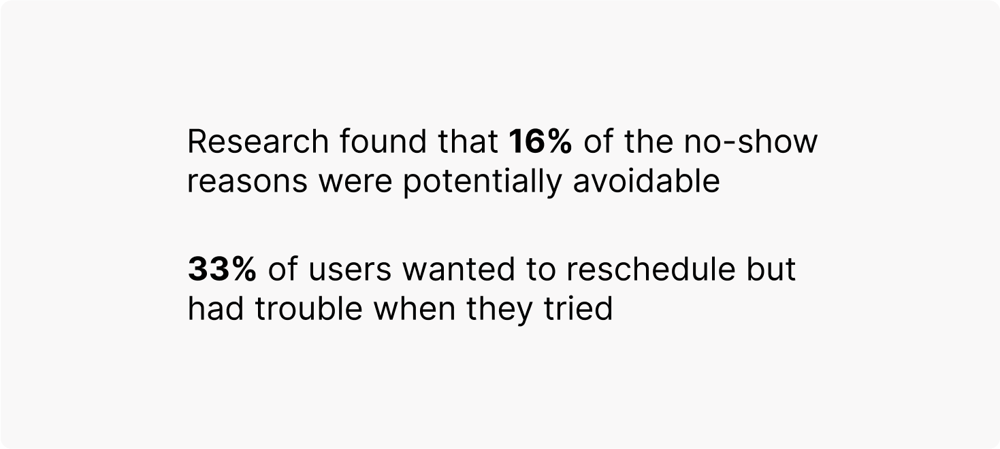
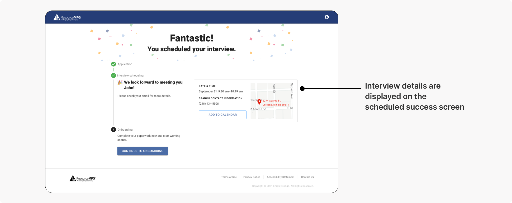
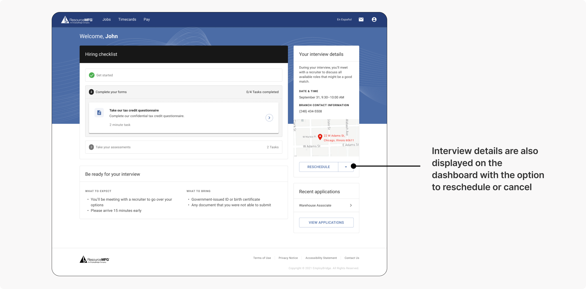
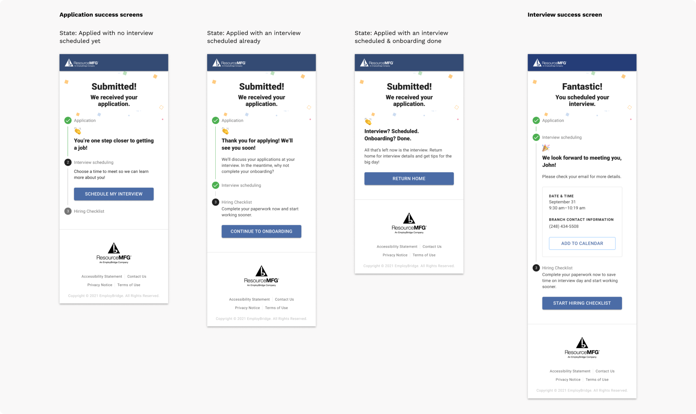
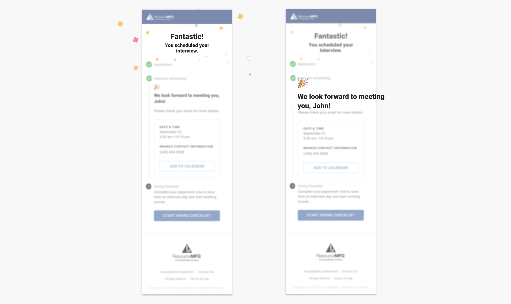

Overview
The Problem
Before getting placed on an assignment through EB, job candidates must complete an interview with a recruiter. The current interview scheduling experience has a high no-show rate.
My Role
Sole Designer, responsibilities:
User flows
Wireframing
Prototyping
High-fidelity mockups
Responsive design
Goal
The goal with this new experience is to increase interview show rate by 15% (+900 interviews per week).
Impact
This work shipped and rolled out in 5+ EB branches. Early success indicators show that interviews scheduled have increased 10% and 92% of candidates that create an account go on to schedule an interview.
Design Process
Working with a vendor
EB leveraged a 3rd party vendor, TimeTap, for the scheduling service. Initially, it was unclear if we’d be able to design a custom UI for this experience or if we’d need to use TimeTap’s out of the box UI.
I started by identifying quick wins we could make with CSS changes if we needed to go the out of the box route.
Inspiration & early ideation
Fortunately, we had the resources to build a more custom experience. Before sketching, I pulled inspiration from other scheduling tools to look for patterns that I could use.
After rounds of internal feedback, the “scheduling experience” ended up being one screen. To simplify the experience, while keeping in any necessary information, I removed screens/components that wouldn’t be valuable to the user. For example, I initially included a screen where users could select a “service” to schedule for, but because the type of interview a user needs to schedule will be based on their application & decided in the back end, users won’t have a selection to make there.
User flow
While the scheduling flow ended up being a simple, single screen, there were other use cases for me to think through. For example, what will happen if the scheduling service goes down? How will a user reschedule or cancel an interview? What if there are no time slots left?
To zoom out and visualize the holistic experience, I created a user flow diagram.
Leveraging Research
Research informed decisions
The research team investigated the no-show issue prior to me joining the project and were able to provide some insights that I referenced while designing.
The researchers uncovered a lack of clear communication when confirming an interview being a pain point for users and recommended displaying all relevant details when a candidate is booking a slot.
They also recommended having an easy way for users to modify (reschedule/cancel) their interview. I reused the interview details module from the success screen on the talent dashboard, with the option to reschedule a cancel. This way, users will be able to view & modify upcoming interviews from their home page.
Key Design Features
Designing a component for scale
One screen that went through several iterations was the success screen. This interview scheduling experience was not only being redesigned to improve metrics, but it was also being designed to match the look & feel of a new talent portal EB was launching. In this new portal, job candidates are walked through applying, interview scheduling, and completing onboarding. The success screen appears after each of these steps - it confirms an action, lets the user know where they are in the process, and encourages them to the next step.
To bridge between submitting an application to scheduling an interview to then filling out onboarding paperwork, I needed to design a pattern that’s not only informative & encouraging, but is also reusable for multiple use cases.
After several iterations (see above), I landed on the success screens below. I introduced a stepper component & worked with engineering to incorporate this into our Storybook library. This was flexible enough to fit all of the possible use cases.
Encouraging the user
I wanted to add elements to the success screen that would celebrate the user for the progress they’ve made & encourage them to continue in the process to finding a job. To do this, I incorporated celebratory copy and worked with engineering to implement a confetti animation upon page land.
Results
Early success indicators
This work shipped and rolled out in 5+ EB branches. Early success indicators show that interviews scheduled have increased 10% and 92% of candidates that create an account go on to schedule an interview.
A tragic ending
Unfortunately, the new talent portal initiative this tool was designed to live in got rolled back, so this feature is no longer live. Classic business reprioritization. It lives on in this case study 🤘😔